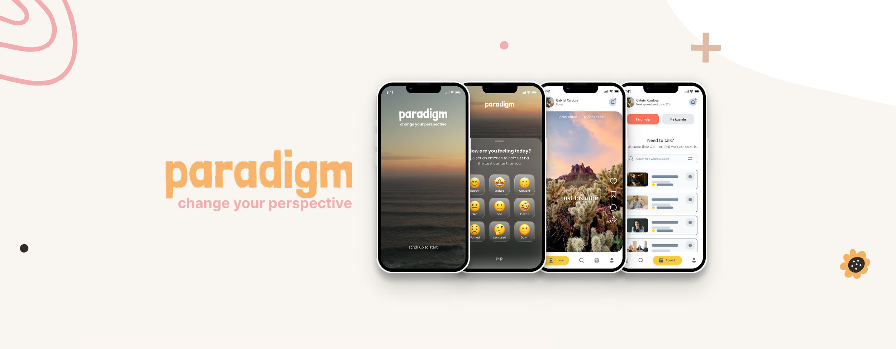
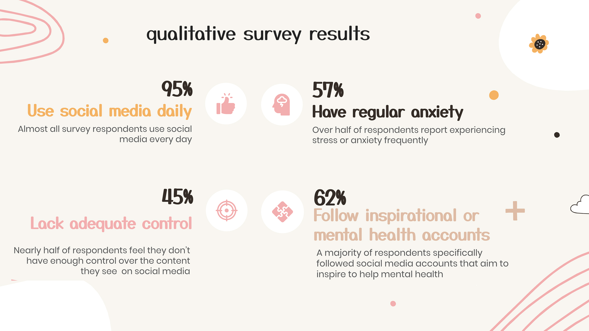
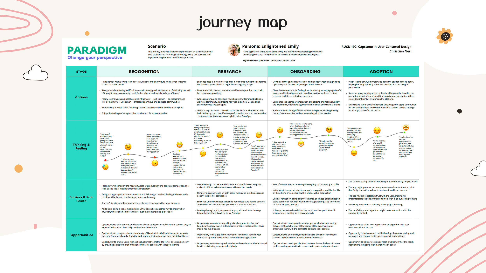
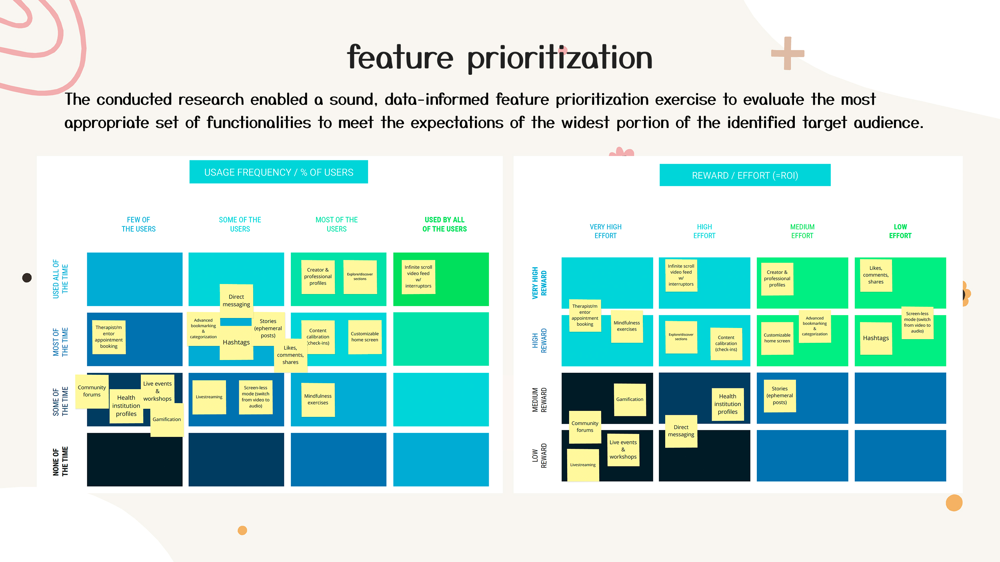
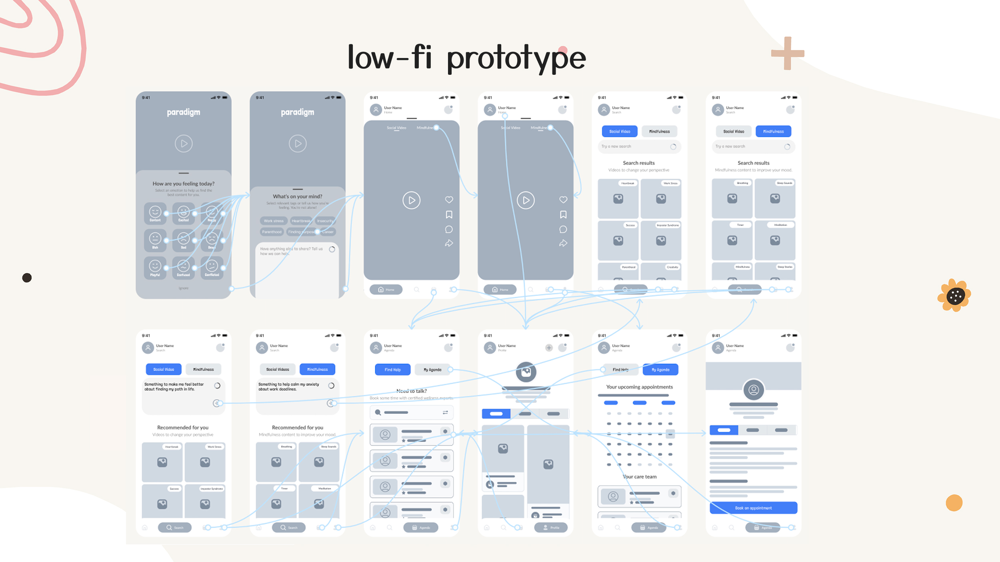
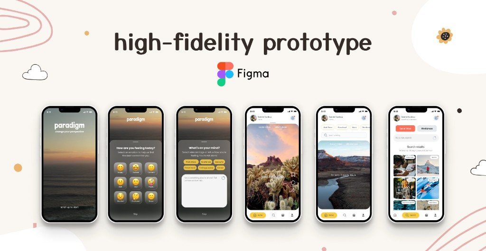

Reimagining social media through a mental wellness lens

Paradigm is a conceptual mobile experience exploring a question that defines modern digital product design:
What responsibility do digital platforms have in shaping users’ emotional wellbeing?
The project emerged from a broader interest in the relationship between social media, algorithmic content consumption, and mental health — particularly among younger digital-native audiences.
Rather than approaching mindfulness as a separate utility disconnected from everyday digital behavior, Paradigm explored whether the engagement mechanics of social media itself could be redesigned to encourage more intentional, emotionally supportive experiences.
This became less about designing “another mindfulness app” and more about examining how product systems and content influence emotional states, attention, and user agency.
The context & key questions
In 2019, 970 million people globally were living with a mental health disorder. In 2022, 23.1% of American adults experienced a mental health condition. These challenges are estimated to cost $16 trillion globally by 2030.
To what extent does social media impact mental health, how do digital natives cope with anxiety, and what design solutions can leverage the playbook of the world’s most popular platforms to help young people reduce stress and mend their relationship with social media?
The problem
Modern social platforms are incredibly effective at capturing attention — but not necessarily at supporting wellbeing.
Research increasingly points to the effects of:
- passive content consumption,
- algorithmic reinforcement loops,
- overstimulation,
- and comparison-driven engagement patterns.
At the same time, mindfulness and wellness platforms often struggle with long-term engagement because they exist outside users’ existing digital habits and behavioral patterns.
The challenge became:
Could the mechanics that make social platforms addictive be reimagined more intentionally to support emotional wellbeing instead?
Research & exploration
The project began with a broad research phase combining a literature review, market analysis, qualitative user research, and behavioral pattern analysis.
An extensive review of existing research explored:
- social media’s impact on mental health
- digital coping behaviors
- passive vs active consumption patterns
- and the efficacy of mindfulness applications
A qualitative survey of 65 participants helped surface:
- emotional triggers tied to platform usage
- coping mechanisms
- motivations for social media engagement
- and expectations around personalization and emotional safety

One insight became especially important:
Users wanted more control over the emotional tone of the content they consumed — but most platforms offered very little intentionality around algorithmic calibration.
That insight significantly shaped the product direction.
Product thinking & design decisions
Instead of treating content recommendations as a purely engagement-driven system, Paradigm explored how recommendation mechanics could become more transparent, adjustable, and emotionally responsive.
Several core design decisions emerged from this thinking:

Designing for agency, not just engagement
A central concept of the experience was giving users more influence over the algorithm shaping their content feed. This led to the introduction of:
- emotion calibration tools
- personalized recommendation controls
- and the “Quick Search” feature, allowing users to intentionally influence the content surfaced to them

The goal was not simply personalization — but restoring a greater sense of agency within algorithmic experiences.
Leveraging familiar interaction models intentionally
Rather than reinventing interaction patterns entirely, the experience borrowed familiar mental models from short-form social video platforms.
This reduced onboarding friction while allowing users to focus attention on the emotional and behavioral experience itself rather than learning a new interface paradigm.
The design challenge became:
How to preserve familiarity without inheriting the negative behavioral patterns commonly associated with mainstream social platforms.
Designing for emotional clarity
Usability testing revealed that early iterations lacked clarity around the platform’s value proposition and emotional intent.
In response, the onboarding experience was redesigned to:
- better communicate the purpose of the platform,
- establish emotional expectations early,
- and reinforce user control over content personalization.
This significantly improved comprehension and user confidence during testing.
Iteration & validation
Low-fidelity prototypes were tested through contextual interviews and usability sessions to evaluate:
- onboarding comprehension
- content discoverability
- personalization expectations
- perceived emotional relevance

Testing surfaced several key friction points:
- insufficient algorithm transparency
- weak feedback during search interactions
- and unclear content calibration controls
These findings directly informed the final high-fidelity iteration.
Rather than treating usability testing as validation of static screens, the process became an exercise in understanding how users emotionally interpret platform behavior.
That distinction became one of the most valuable learnings from the project.
Outcome & reflection
Paradigm ultimately became an exploration of how digital product design can shape not only usability, but emotional behavior and attention patterns.
More than a conceptual UI exercise, the project challenged me to think more critically about:
- algorithmic responsibility
- behavioral design ethics
- emotional UX
- and the unintended consequences of engagement-driven systems
It also reinforced how much modern product design extends beyond interfaces alone.
The most impactful product decisions often happen upstream: how systems are structured, how incentives are designed, and how much agency users are given within digital environments.
In today’s AI-driven landscape — where personalization systems are becoming even more powerful — I believe these questions matter more than ever.
Presenting Paradigm
Combining the emotional power of the moving image with the intentionality and efficacy of mindfulness, the Paradigm concept is a research-based social media experience with the power to inspire, change perspectives, and reduce commonplace stress and anxiety. Crafted with a clean, minimalist interface, Paradigm’s interaction design is familiar and fosters connection, helping users build likeminded communities through a variety of inspirational social video and therapeutic mindfulness content. Personalized recommendations tailor content to users’ emotional state and give users the agency to calibrate the algorithm to their needs, building a truly user-centric experience.

Capstone final report
View the full case study below:
Loading presentation…
Couldn’t load the presentation. Open the PDF directly.